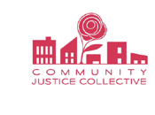
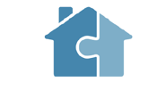
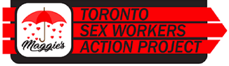
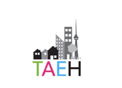
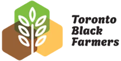
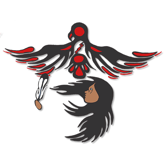
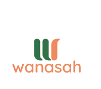

We fund equity-deserving grassroots organizations tackling poverty, housing, and food security in the city of Toronto — unrestricted and long-term, so you can focus on the work.
We collaborate with communities to build a more resilient, equitable, and just society.
A GTA-based family foundation founded in 2021. We make multi-year, unrestricted grants to grassroots and community-led organizations, with a focus on poverty alleviation, social justice, and equity-deserving communities.
Acorn Seed is a family foundation led by the third generation. The funds come from the sale of a large Canadian menswear company, and the work today reflects our generation’s values: a commitment to community, social equity, and the people doing the work to make Toronto a more just place. Our giving is shaped alongside an advisory committee of community-rooted advisors.
All of our partners come from our own outreach — we, alongside our advisory committee, do the research first. We don’t accept unsolicited applications. When we do invite a conversation, we aim to keep it light and flexible. Here’s what to expect.
We do our own research before reaching out. All partnerships begin with a conversation we initiate — not an open call.
An application can take whatever form works best for your team: a short written form, a conversation, a video pitch, or materials you already have on hand.
Five-year, unrestricted funding — 50% in years one and five, 100% in years two through four — with overlap so partners can plan beyond the grant.
No boilerplate reports. One or two honest conversations a year. We’re open to volunteering, supporting matching campaigns, and connecting partners to other funders.
If you’ve received a message from us, this page is a good place to learn more about who we are and how we work.
The work of a funder is to remove barriers, not add them. This is the model we follow — as a partner in long-term work, not a gatekeeper. Our giving is built around five guiding principles, drawn from the Trust-Based Philanthropy Project.
We start from the assumption that our partners are experts in their own communities and use their funding wisely.
The relationship is the work. We invest in long-term, honest partnerships rather than transactional grant cycles.
We come in to listen and learn. We are accountable for the harms a funder can cause, even unintentionally.
Decisions about how funding is used belong with the people doing the work, not the people writing the cheques.
We prioritize organizations led by and serving Black, Indigenous, racialized, disabled, and 2SLGBTQ+ communities, and grassroots groups working through charitable mentors or shared platforms.
We’re still learning. We continue to take cues from our partners and our advisory council on how to make our process better — and ultimately less annoying for the organizations we support. Funders don’t need to suck so much. Seriously, we can do better. We welcome honest feedback from our charity partners and try to make funding relationships feel more like a partnership.
Who we fund. Priority is given to organizations led by and serving equity-deserving communities — including Black, Indigenous, People of Colour, people living with disabilities or mental illness, and 2SLGBTQ+ communities. We also fund grassroots causes operating through charitable mentors or shared platforms.
An urban agricultural centre rooted in Toronto’s Jane and Finch neighbourhood, engaging diverse communities through sustainable food.

Legal support for community organizers and social justice movements across the Greater Toronto and Hamilton Area.

Coordinates “one-stop-shop” events connecting people at risk of or experiencing homelessness with the supports they need.

Canada’s oldest sex-worker justice initiative, offering wrap-around services and life-affirming care across Toronto and the GTA.
Builds literacy programs and resources for families and children in the Kingston-Galloway-Orton Park community of Scarborough.

A community-based collective-impact initiative working toward a Toronto where homelessness is rare, brief, and non-recurring.

A collective of urban farmers and growers building a community food hub focused on food sovereignty, justice, and access to clean food.

Trauma-informed, culturally grounded services and housing for First Nations, Inuit, and Métis 2SLGBTQIA+ women exiting the justice system.

A non-profit mental-health agency addressing the urgent needs of Black youth and their families in Regent Park and surrounding downtown Toronto neighbourhoods.